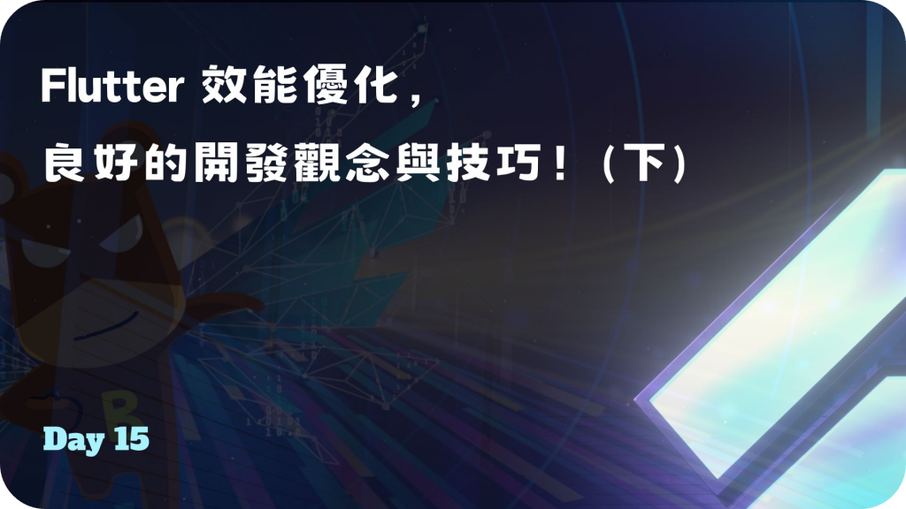

Day 15: Flutter 效能優化，良好的開發觀念與技巧！(下)
- 發布時間：2023-09-30 21:29:41
- 原文連結：https://ithelp.ithome.com.tw/articles/10331424
- 系列標記：探索 Flutter 由裡到外，三十天帶你前往進階系列 第 15 篇

延續上一篇的內容，本文繼續跟大家分享一些正確觀念，為了就是在開發時可以撰寫出品質好的程式碼，寫的任何一個元件都很重要，它們為何存在，使用的優缺點是什麼，都應該清楚了解。如果是以好習慣寫出來的畫面，當然除了性能表現佳之外，後續需要解決的問題也會變少，是很值得前期重視的投資哦！
謹慎使用 saveLayer()
saveLayer()也稱為離屏渲染，是引擎在針對某些情境處理渲染時會使用到的操作，本身屬於高成本、高耗時。- 主要是用來呈現各種 UI 視覺效果，渲染形狀、裁剪、透明度與重疊效果，有些都會使用到
- 過程中會分配一個
螢幕外緩衝區(off-screen buffer)，並且將內容繪製到這裡，GPU 處理時會進行渲染目標的轉換，跳轉到另一個 Layer，導致運行緩慢**** - 有些 Widget 跟 Package 可能有在使用，過多的話造成 UI 卡頓，允許的話在使用前稍微閱讀過源碼會更有保障，否則會發現效能被拖慢的現象
- 相關元件與操作
- Opacity
- ClipRRect
- ShaderMask
- ColorFilter
- Chip →
disabledColorAlpha ≠ 0xff - Text →
overflowShader
提醒：可使用 Skia Screenshot 協助我們檢查渲染過程，詳細的說明可閱讀另一篇文章(等待上傳)

Opacity 操作
- 除非必要，否則減少使用
- 處理顏色的透明度，建議選用
withOpacity()方法來添加不透明層
Container(color: Colors.blue.withOpacity(0.5)),
ColoredBox(color: Colors.blue.withOpacity(0.6)),
Text('Hi!', style: TextStyle(color: Colors.blue.withOpacity(1))),
// Image
Image.network(
'images/70760bf1e88b184bb1bc.png',
opacity: _animationController,
),
Image.network(
'images/70760bf1e88b184bb1bc.png',
opacity: AlwaysStoppedAnimation(_animationController.value),
),
Clipping 操作
- 本身不會調用
saveLayer()，不會跟 Opacity ****一樣麻煩，但還是有成本，默認情況下裁剪被禁用為Clip.none，除非使用Clip.antiAliasWithSaveLayer - 如果要有帶圓角的矩形，可以多使用 BoxDecoration 裡的
borderRadius屬性去實現，而不要使用 ClipRRect 裁切矩形，實際上圖形引擎在處理的過程會比較輕鬆，性能比較好 - 避免在動畫中進行裁剪，盡量在執行動畫之前先裁剪完成
Container(
width: 200,
height: 200,
decoration: BoxDecoration(
color: Colors.blue,
borderRadius: BorderRadius.circular(20),
),
),
檢測 saveLayer()
- App 元件，設置
checkerboardOffscreenLayers為 true - 檢查畫面上的元件是否有使用到
saveLayer()相關操作，有的話會透過棋盤格呈現

使用 RepaintBoundary 重繪邊界
- 緩存並防止不必要的繪製，有需要才動作，不會因其他狀態的刷新或改變而影響，提高性能。當只有一小部分元件需要刷新，而其他UI部分是靜態且固定的，這個情況很適合使用
RepaintBoundary包裹不需要更新的元件，例如：動畫元件 - 將內容繪製到螢幕外的緩衝區 (off-screen buffer) 接著進行合成到畫面，可以減少需要重繪的 View 數量。過程中會創建一個獨立的
display list(一連串輸出圖像的命令)，包含許多元件，可以將主要渲染元件與其他元件分割，不同 Layer 的分離，實現只繪製內容發生變化的subtree，告訴 Flutter 這些元件應該在不同的 WidgetTree，處理自己的繪製，不會被其他不相關的繪製影響 - 有助於限制
markNeedsPaint()和paintChild()的使用，避免同一層的相關 RenderObject 被重新繪製。通常只要child.isRepaintBoundary為 false，那麼就會執行paint方法，重新繪製子元件 - ListView 預設使用了 RepaintBoundary，當滾動列表的時候 item-widget 會保留且不再重新繪製
注意：Raster Cache 光柵緩存，創建成本高，會佔用大量 GPU 效能，濫用會造成過多的記憶體使用，因為需要緩存更多資訊
另外
在 main 可以設置 debugRepaintRainbowEnabled 為 true，畫面會將元件透過顏色線條框起來，可幫助發現正在被繪製的區塊，有刷新的話線條顏色會一直變換。
相關檢測
- App 元件，設置
checkerboardRasterCacheImages為 true - 瀏覽圖片光柵緩存的情況，檢查有沒有給靜態圖像做緩存，沒有的話會導致每次 build 都重新繪製，以棋盤格呈現。
- 引擎會自動判斷圖像是否複雜到需要 RepaintBoundry，協助我們作出優化決策

模糊效果，使用 ImageFilter 代替 BackdropFilter
- 兩者都能實現模糊，但是
ImageFilter的渲染速度更快 - 適當地搭配
RepaintBoundry，以減少重新渲染模糊效果的頻率
// Bad. BackdropFilter
Stack(
children: [
Image.asset(
'images/70760bf1e88b184bb1bc.png',
width: 50,
height: 50,
),
BackdropFilter(
filter: ImageFilter.blur(sigmaX: 6, sigmaY: 6),
child: Container(
color: Colors.grey.withOpacity(0.6),
),
),
],
),
// Good. ImageFiltered
Container(
color: Colors.blue.withOpacity(0.5),
child: ImageFiltered(
imageFilter: ImageFilter.blur(sigmaX: 6, sigmaY: 6),
child: Image.asset(
'images/70760bf1e88b184bb1bc.png',
width: 50,
height: 50,
),
),
),
使用懶加載的 IndexedStack
如果是一般 TabBar 和 TabView，它會在首次加載時實體化所有頁面、元件，而對於多個頁面的情境，這可能會導致一開始載入或是跳轉的過渡動畫有嚴重卡頓，幀數過低。
以下範例的寫法可以只載入需要顯示的畫面元件，減少資源的消耗：
late final List<bool> _pageActivateds = List<bool>.filled(4, false);
Widget build(BuildContext context) {
_pageActivateds[widget.index] = true;
final children = List.generate(
_pageActivateds.length,
(i) => _pageActivateds[i] ? pages[i] : const SizedBox(),
);
return IndexedStack(children: children);
}
準確地使用 GlobalKey
- GlobalKey 可以將元件的 Element 和 RenderObject 保存起來，即便元件已經從樹上離開了，只要轉移到其他的樹狀結構或是階層，它就能確保使用相同的 Element 和 RenderObject，所以 State 也會跟剛才一樣，不會被重置
- 對於會頻繁更換階層、消失又再次出現的元件，特別是很大的 Widget Tree，在這種情況下也許就適合給予一個 GlobalKey
// FROM
final complextWidget = Container();
return isGood ? Container(child: complextWidget) : complextWidget,
// TO
final complextWidgetKey = GlobalKey();
final complextWidget = Container(key: complextWidgetKey);
return isGood ? Container(child: complextWidget) : complextWidget,
提醒：使用 GlobalKey 這個過程也稱為 Tree Sugery，很方便但也很危險，使用成本高，濫用的情況下會很大的影響效能，很可能會造成卡頓、不順暢
在 State 使用 dispose()
- 釋放資源，避免記憶體洩漏，影響性能
- 常用情境，使用 TextEditingController、AnimationController、Ticker 等等，在不需要時釋放
super.dispose()需作為最後一個執行函式，資源釋放需要在之前執行，如果在後面則不會處理
@override
void dispose() {
_animationController.dispose();
super.dispose();
}
壓縮數據
進行數據壓縮後可有效節省記憶體，需要時再解壓縮並使用。如果需要將某些資料儲存到本地，例如：文件、SharedPreference 等等，可以先將資料壓縮後再儲存。不過，還是根據實際場景決定是否真的需要。
final jsonString = await rootBundle.loadString('assets/food.json');
// compressed
final original = utf8.encode(jsonString);
final compressed = gzip.encode(original);
// decompressed
final decompressed = gzip.decode(compressed);
final jsonString = utf8.decode(decompressed);
使用 Isolates 處理複雜任務
當此任務在同步和非同步處理時可能會花很長且不可預期的時間，或是跟原生平台的互動，都適合使用 Isolate，例如：大量的文字解析、圖像處理、大型檔案的存取，都可能會堵塞 Main Isolate，影響到 Rendering Pipeline。適當地使用 Isolate 可以提升性能並優化整體的使用者體驗。
以下是簡易範例：
void createIsolate() async {
Isolate? isolate;
ReceivePort receivePort = ReceivePort();
try {
isolate = await Isolate.spawn(_worker, receivePort.sendPort);
receivePort.listen((dynamic message) {
debugPrint(message.toString());
});
} catch (e) {
debugPrint(e.toString());
} finally {
isolate?.addOnExitListener(receivePort.sendPort, response: "isolate has been killed");
}
isolate?.kill();
}
void _worker(SendPort sendPort) {
// Do complex task..
}
詳細的 Isolate 說明我有在另一篇文章提及，有興趣請點擊連結深入了解。
Day 10: Async 和 Isolates 差異在哪裡？正確使用才能確保流暢體驗！
保持 Flutter 為最新版本
不要忘記持續追蹤 Flutter Repo，在每個版本中，Flutter 都進行了許多優化，以現在來看，近期都在處理 Dart 3、Impeller Renderer、Material 3、Widget API、Document，當然也包含很多原生平台的更新，效能持續提升，以整體來看大部分情境下是好處多的。同時呼籲大家更新後，如果有發現任何 Bug 問題，都不要吝嗇的發 Issue 到 Flutter Repo，大家的積極只會讓 Flutter 進步更快，我們共勉之。
flutter upgrade


總結
本文的 saveLayer 與 RepaintBoundary 操作都是 UI 的開發重點，如何以性能較好的方式去撰寫，需要養成習慣。而除了上述提到的內容大部分都與 UI 有關，也包含資料處理和 Isolate 使用，建議有時間的話，可以嘗試理解每個開發選擇和優化的由來，相信對於未來實作上的理解會更不一樣。
對於優化與觀念部分，喜歡的話請留言讓我知道，會在整理一些能幫助大家的內容。本系列已經到一半了，不覺得時間過很快嗎，休息放鬆一下，我們繼續加油！
延伸閱讀
參考與相關資源
- https://api.flutter.dev/flutter/dart-ui/Canvas/saveLayer.html
- https://docs.flutter.dev/perf/best-practices
- https://blog.gskinner.com/archives/2022/09/flutter-rendering-optimization-tips.html?linkId=8208387